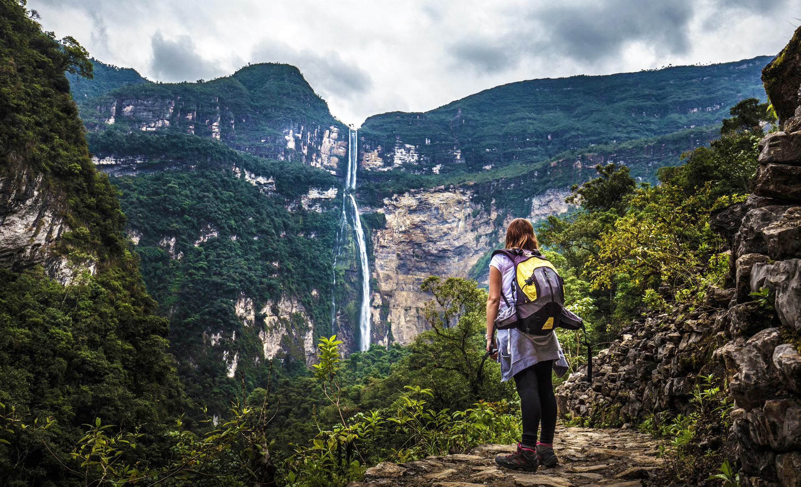

Machu Picchu, Cusco
Machu Picchu es el sitio de una antigua ciudad inca, en lo alto de los Andes del Perú. Situado a 2430 m.s.n.m, machu picchu es conocido como "La Ciudad Perdida de los Incas". Es uno de los conjuntos arqueológicos más famosos y espectaculares del mundo.
Leer más

Catarata de Gocta
Conocida localmente como La Chorrera, es un salto de agua que se encuentra en las cercanías de los caseríos peruanos de San Pablo, distrito de Valera, provincia de Bongará, departamento de Amazonas en el noreste del Perú.
Leer más
Laguna Huacachina, Ica
La área de conservación regional Laguna de Huacachina abarca las dunas de la provincia de Ica. Forma parte del ecosistema Ecorregión del Desierto del Pacífico y Zona de Vida Desierto Subtropical.
Leer más